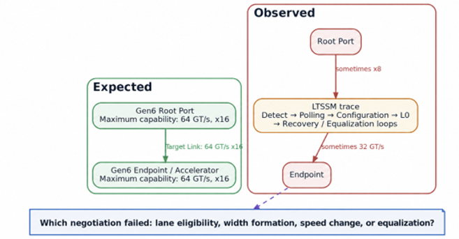
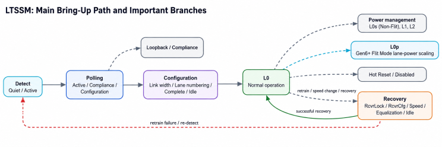
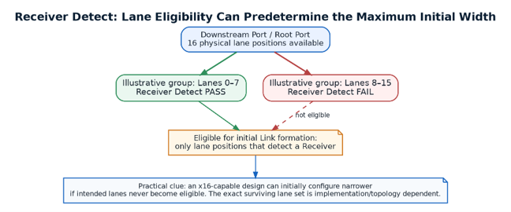
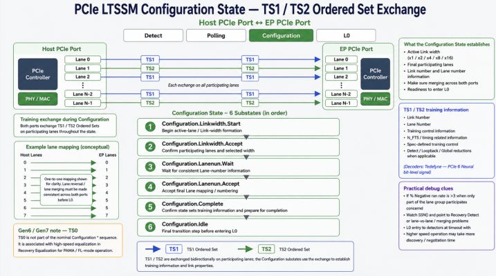
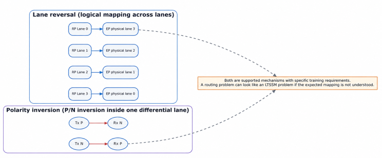
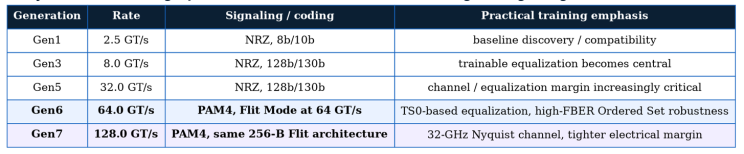
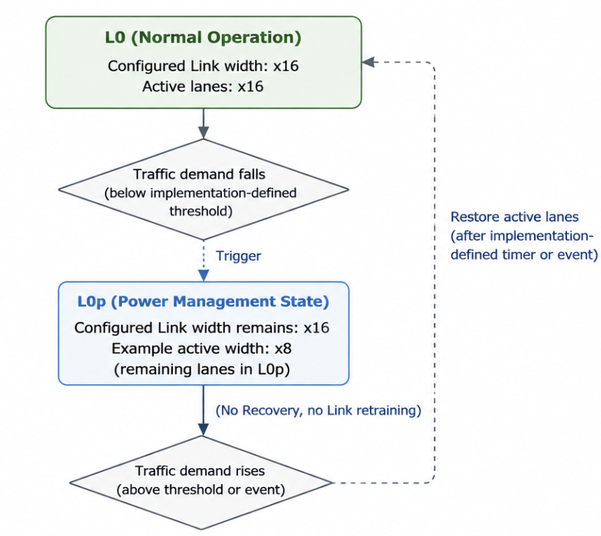
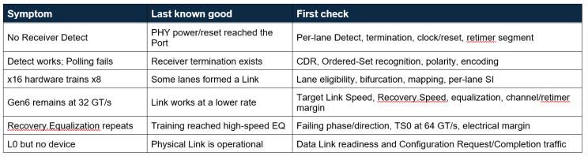

Originally published on LinkedIn. View original article ↗

In the previous article, I covered the high-level overview of the events before PCIe EP becomes visible to software. In this article, I will deep dive into the link up and LTSSM in detail, so this article is going to be little lengthy. This post will cover the details of link up and also gives practical bring up perspective.
The Link is connected. But what Link did you actually get?
Power is good, reset is released and Receiver Detect succeeds. A Gen6 x16 accelerator should ultimately reach 64 GT/s x16, yet one platform trains at x8, another remains at 32 GT/s, and a third keeps cycling through Recovery and Equalization. These symptoms can look similar from software, but they point to different failure boundaries inside Link training. The fastest way to narrow them is not to memorize the LTSSM. At each stage, ask: what is the last thing the Link definitely proved? This article follows that question from Detect through Polling, configuration, L0, speed change and equalization, with a Gen6/Gen7 bring-up perspective.

What this article will cover
How a PCIe Link progresses from Receiver Detect through Polling and Configuration before reaching L0.
What is the LTSSM really trying to do?
LTSSM (Link Training and Status State Machine) is the Physical-Layer state machine that turns an electrical connection into an operational Link. The two Ports do not assume that a healthy Gen6 x16 Link exists; they prove it in stages: receiver present → training recognizable → lanes formed and numbered → width established → higher speed attempted → equalization succeeds where required → stable L0.

The above Figure shows the main bring-up path and important side branches (not every transition is shown). Gen6 adds Flit Mode negotiation, TS0, L0p and revised Ordered-Set behavior, but the same last-known-good method still applies.
1. Receiver Detect: is an electrical partner present?
Detect is where “device present” becomes an electrical question. Normal TLPs, DLLPs and software configuration accesses are not the mechanism used to answer it.
A. Detect.Quiet : Detect.Quiet is the quiet/retry part of Detect. The transmitter remains in Electrical Idle, and if the Port entered Detect from a higher rate the PHY returns to the 2.5 GT/s operating-rate baseline.The actual Receiver Detect operation follows in Detect.Active.
B. Detect.Active : Detect.Active performs Receiver Detection on unconfigured lanes that may participate in the Link. It is an electrical termination check, not a packet exchange. A lane that fails Detect is not used in the initially configured Link. So “16 routed lanes” and “16 LTSSM-eligible lanes” are different facts.

C. Debug focus: x16 hardware trains narrower
First check whether all intended lanes were eligible for Link formation: per-lane Receiver Detect, platform bifurcation, routing/connector continuity, termination/PHY setup, reset/refclk readiness and any retimer segment in the path.
Passing Receiver Detect proves electrical presence, not Gen6/Gen7 margin; a lane can detect successfully and fail later during training or equalization.
Why does a Gen6/Gen7 Link start at 2.5 GT/s?
PCIe begins initial training from the 2.5 GT/s baseline for compatibility. Higher rates are reached later through Recovery.Speed and equalization.
2. Polling: can the two ends hear and understand each other?
Polling moves the Link from simple electrical presence to recognizable PCIe training traffic. Its main substates are Polling.Active, Polling.Compliance and Polling.Configuration. Polling happens by exchanging TS1, TS2 ordered sets.

A. Polling.Active
Polling.Active establishes receiver lock and recognizable PCIe training traffic. The transmitter sends TS1 Ordered Sets on the lanes that detected a receiver, with Link and Lane Numbers set to PAD.
To make forward progress, the receiver must recognize the required consecutive TS1 or TS2 training sequences. Therefore, TS1 is the transmitted training sequence for this substate, although TS2 may be observed from a partner that has already progressed toward Polling.Configuration.
B. Polling.Compliance
Polling.Compliance is the compliance/test branch rather than the normal Link-formation path. The transmitter sends the applicable compliance pattern, not normal TS1/TS2 Link-training traffic. If the DUT enters this state unexpectedly, check compliance controls, straps and test stimulus.
C. Polling.Configuration
In Polling.Configuration, the transmitter sends TS2 Ordered Sets with Link Number = PAD and Lane Number = PAD. This substate prepares both Ports to enter the main Configuration state; actual Link-number and Lane-number establishment occurs later during Configuration.
Any required polarity inversion must be completed before leaving Polling.Configuration, although the receiver is permitted to detect and handle the inversion earlier, including during Polling.Active.
3. Configuration: how do physical lanes become one logical Link?
Configuration turns the Receiver-detected lanes into one logical Link and establishes its width and lane identity.

A. Configuration.Linkwidth.Start and Configuration.Linkwidth.Accept
When Configuration begins, the Link does not yet have final logical Lane numbers. The first task is to determine which Receiver-detected lanes can form one Link and establish a Link Number for that group.
During initial training, the Downstream Port leads this process. In Configuration.Linkwidth.Start, it transmits TS1 Ordered Sets on candidate lanes with a selected non-PAD Link Number, while the Lane Number remains PAD. The Upstream Port responds with the selected Link Number, still with Lane Number set to PAD.
Only lanes that detected a Receiver during the most recent Detect process are eligible for the initially configured Link.
In Configuration.Linkwidth.Accept, lanes returning the expected Link Number can be grouped into a valid Link. The Downstream Port then assigns unique, non-PAD logical Lane Numbers, sequentially from 0 to N−1, to the participating lanes. Lanes that cannot join the selected group remain outside the configured Link.
This is one reason a physically x16-capable interface can train as x8: Receiver Detect may succeed on many lanes, but Configuration must still form a valid multi-lane group.
B. Configuration.Lanenum.Wait and Configuration.Lanenum.Accept
The Lanenum substates make both Ports converge on the logical ordering of the selected lanes.
TS1 Ordered Sets now carry the selected Link Number together with non-PAD Lane Numbers. The receiving Port checks the proposed numbering and returns the corresponding Link/Lane information. These states also allow the two Ports to settle on a valid width rather than reacting immediately to transient lane errors or lane-to-lane skew.
If supported lane reversal is used, physical lane order does not have to equal logical Lane order. What matters is that both Ports establish a consistent logical mapping from Lane 0 through Lane N−1.
If the proposed mapping cannot converge into a valid Link, the Link may be re-evaluated with a smaller valid lane group. If no valid configuration can be established, the LTSSM can return to Detect.
This is why a lane-mapping problem may appear as a width problem even when Receiver Detect succeeded on every physical lane.
C. Configuration.Complete and Configuration.Idle
Once width and Lane numbering have converged, Configuration.Complete changes the purpose of the training exchange from establishing the Link to confirming it.
The Ports transmit TS2 Ordered Sets using the established non-PAD Link and Lane Numbers. Received TS2s are checked for the expected Link/Lane mapping and applicable training information. Supported data-rate information advertised during training also provides information needed for subsequent higher-speed operation.
The LTSSM then enters Configuration.Idle, where the configured lanes complete the required generation-specific handoff before entering L0.
At this point the Physical Layer has established a Link with a definite configured width and logical Lane mapping. It does not necessarily mean that the Link is already operating at its maximum supported speed. On the conventional initial-training path, Link formation begins from the 2.5 GT/s baseline; higher mutually supported rates are reached later through Recovery and, where required, Equalization.
D. Practical debug case: why did x16 become x8?
The phrase “x16 device” can hide several different facts:
• the package/controller may implement 16 lanes,
• the board may route 16 lanes,
• the platform may bifurcate them into multiple independent Links,
• Receiver Detect may succeed on fewer than 16 lanes,
• the final negotiated width may therefore be narrower,
• later power-management behavior such as Gen6 L0p may temporarily reduce active lanes without changing the original Link formation.
When a Link is downconfigured, unused transmitter lanes are placed in Electrical Idle. Those lanes do not take part in a later rate change while they remain outside the configured Link.
Lane reversal and polarity inversion: two different mechanisms

Any required polarity inversion must be completed before leaving Polling.Configuration.
4. L0: a milestone, not the end of bring-up
L0 is the normal operational LTSSM state, but Physical-Link readiness and Data-Link readiness are separate milestones:
- LTSSM establishes an operational Physical Link.
- Then the Data Link Layer performs its own initialization before the Link is fully ready for normal higher-layer traffic.
Controllers often expose both statuses; the Physical Link can be up while Data Link initialization is still progressing.
5.Recovery: why a healthy Link may leave L0
Recovery is a normal control path used for re-lock, retraining, speed changes and equalization. The useful debug questions are why the Link entered Recovery and whether it returned to L0 as expected.

A. Recovery.RcvrLock
In Recovery.RcvrLock, the receiver re-establishes or confirms training lock while the transmitter continuously sends TS1 Ordered Sets on all configured lanes. At data rates above 2.5 GT/s, an EIEOS is inserted after every 32 TS1 Ordered Sets. SKP Ordered Sets are also transmitted as required for clock compensation at all data rates.
B. Recovery.RcvrCfg
In Recovery.RcvrCfg, both Ports exchange TS2 Ordered Sets to reconfirm the established Link configuration. With no pending speed change, the Link can proceed toward Recovery.Idle; with an agreed speed change, it proceeds to Recovery.Speed.
C. Recovery.Speed
Recovery.Speed performs an agreed signaling-rate transition. Configured lanes enter Electrical Idle, the PHY changes rate, and training resumes through Recovery.RcvrLock at the new rate. If lock cannot be established, Recovery may use Recovery.Speed again to fall back to a lower or previously operating rate.
D. Recovery.Idle
Recovery.Idle is the final handoff before returning to L0. Repeatedly reaching Idle and then re-entering Recovery suggests that the attempted operating point is not stable.
E. Recovery.Equalization — Phases 0 through 3
Trainable equalization is used at 8.0 GT/s and above to compensate for the actual transmitter-channel-receiver path. Recovery.Equalization has phases 0–3. Exact presets/coefficient exchanges, Ordered Sets and completion rules are generation-specific; the most useful debug clue is which phase and direction fails.
Both ends support Gen6. Why is the Link still running at Gen5 speed?
Maximum capability is only the upper bound. Compare maximum capability, Target Link Speed, current speed and negotiated width before blaming software.
Possible causes include channel loss/reflections/crosstalk, TX/RX equalization behavior, retimers, refclk/jitter margin, Ordered-Set or speed-change logic, or platform policy. The LTSSM trace tells you which area to investigate first.
What changes in PCIe Gen6 Link training?
PCIe 6.0 raises the rate to 64 GT/s using PAM4. Flit Mode, lightweight FEC, strong CRC and Link-level retry address the higher raw-error environment, while Link training must still establish a reliable high-speed channel.

A. Flit Mode is part of the link-training story
Flit Mode is required at 64 GT/s and can also operate at lower Link speeds. Once a Link trains into Flit Mode, it remains in that mode while the Link stays up.
B. TS0 — a new training character for 64 GT/s Flit-mode equalization
TS0 is a Gen6 addition used for 64 GT/s Flit-mode equalization. In a Gen6 analyzer trace, it provides an important boundary: did failure occur before TS0-based equalization, during it, or after it completed?
C. Ordered Sets must survive a much higher BER environment
FEC protects Flits, while training Ordered Sets remain lane-level control structures. At 64 and 128 GT/s, their robustness relies on generation-specific repetition/handshake and redundancy mechanisms rather than simply using the normal Flit FEC path.
What gets harder in PCIe Gen7?
PCIe 7.0 doubles the rate to 128 GT/s while retaining PAM4 and the 256-byte Flit architecture. The unit interval is 15.625 ps and the Nyquist frequency is 32 GHz.
The LTSSM concepts remain familiar, but channel loss and discontinuities, jitter/refclk/power noise, retimer partitioning and marginal lanes consume more margin. Protocol traces should therefore be correlated with electrical measurements.
Gen6 L0p: dynamic width change is not failed Link training
Gen6 L0p can temporarily reduce active lanes in Flit Mode while the configured Link remains operational and traffic continues. It does not use Recovery and should not be confused with initial x16→x8 downconfiguration.

If the Link first trained x16 and later reduces active lanes, L0p may be normal; if it never formed above x8, debug Detect and Configuration instead.
Practical debug cases: how to narrow the problem

Next Part: The Link Is Up. Why Is the Device Still Invisible?
Assume the Link is now stable at 64 GT/s x16 and the Data Link Layer is active, yet the operating system still sees no device. Part 3 moves above Link training into Configuration Space, Type 0/Type 1 Requests, BDF discovery, BAR sizing, bridge windows and enumeration.